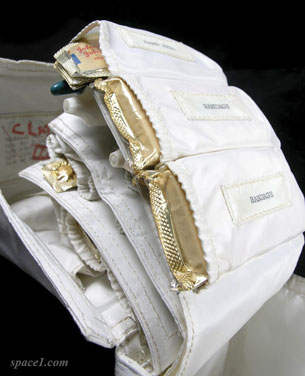

Courtesy of Johnson Space Center/NASA
Legend has it that Neil Armstrong, the first man to walk on the Moon, was reluctant to go into space unless Aspirin was included on the mission. Aspirin tablets—used for relieving headaches and muscle pain—were included in the medical kit (shown here) of the Apollo 11 space capsule and for later space missions. The key ingredient in Aspirin is acetylsalicylic acid (ASA).
As you have discovered, titration is a process that can be used to determine the quantity of a substance in a sample. In this lesson you will learn more about the stoichiometry involved in the process of titration and why titration can provide such accurate and reliable data in quantitative analyses. You will also perform a titration of pain-relief tablets to determine the mass of ASA present.
How are titration graphs drawn?
How do you select an appropriate indicator for a titration?
You will complete the Lesson 7 Assignment 3 in this lesson.
Remember that the questions that are not marked by the teacher provide you with the practice and feedback that you need to successfully complete this course. You should respond to all the questions and place those answers in your course folder.